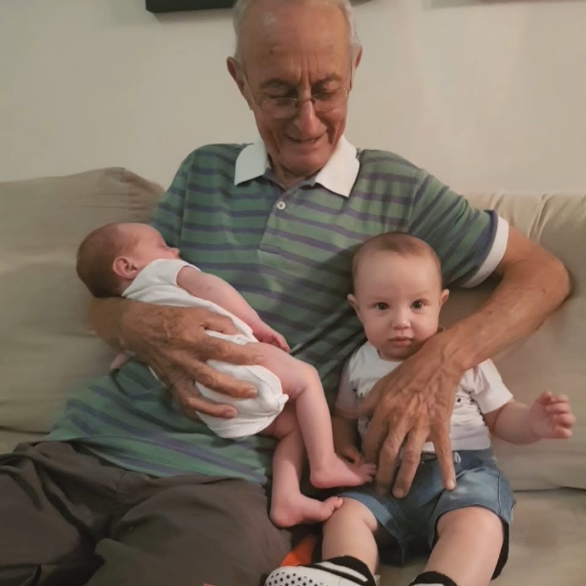

Tributo à Isnar Carneiro

"Sou do interior da Bahia, região da Chapada Diamantina. Sempre ligado à família numerosa e às chuvas, escassas naquela parte do Brasil. A ligação à família, às chuvas, às vacas, às cabras, aos peixes e às abelhas marcaram a minha infância e o resto da minha vida."
Palavras do próprio Isnar, em seu blog pessoal.
Recentemente, quando estive de férias da École Polytechnique, em Caetité, Bahia, após o Tronc commun, descobri uma personalidade com a qual me identifiquei logo de imediato. Primo carnal de minha avó Celina, foi alguém que não tive a oportunidade de conhecer em vida. Entretanto, ele deixou um legado muito grande em forma de ensaios e registros, através dos quais pude compreender mais a alma que compõe nossa família. Esse grande sertanejo me ensinou as origens, ao mesmo tempo simples e míticas, do interior baiano, com as quais desenvolvi também um caso de amor.
Seja Maria Rosa, a matriarca que, mesmo analfabeta, cuidava de uma casa com 10 filhos e, mesmo na seca, dava de comer e beber a todos, com fartura quase mística. Seja Sr. Moisés, o fazendeiro que criava gado, plantava tudo o que é tipo de planta e encenava Oliveiros na peça de teatro dos Doze Pares de França, em praça pública. Meus antepassados me encantam e agradeço muito a Isnar por abrir a porta a essa história não contada.
Portanto, esse meu texto tem como objetivo rememorar a figura de Isnar Carneiro, um conterrâneo que nunca conheci, professor de Filosofia e Inglês, teólogo, apicultor e historiador da família. Sua biografia começa em tanque novo, na roça, mas logo depois no estudo no Seminário de Caetité. Segundo ele: “Fui levado para o Seminário quando tinha quinze anos, e, com vinte e dois, ganhei uma bolsa para estudar Filosofia nos Estados Unidos.” Passou 8 anos em Nova Jersey, completou os estudos de Filosofia e Teologia numa universidade dirigida pelos franciscanos e voltou para o Brasil, para Minas Gerais. Não se ordenou padre, mas se casou. Criou uma escola de inglês, a primeira de Betim, teve família, foi secretário de educação da cidade, professor de filosofia e cultivou uma vida cheia de sentido e amor do seu lado.
Pouco sei sobre o estudo para se tornar padre, mas muito conheço sobre as dificuldades do estudante estrangeiro. Imagino ser um estudante estrangeiro na década de 70, tudo muito mais difícil e, por 8 anos ainda, é impressionante. Do pouco que sei dessa história, resta mesmo assim uma profunda identificação. Também fui para o exterior com 22 anos, com uma bolsa de estudos.
Gostaria agora de adicionar uma pequena análise ao trabalho do seu Isnar.
No ITA, me chamam de carneirinho, pois todos devem possuir um codinome. Não ligava muito e, no início, pensava que poderia ter um nome melhor, mais criativo. Mas hoje descubro: Isnar ensina. Não há nome melhor que esse.
Ser carneiro é compartilhar a energia de Moisés e da Maria Rosa. Dos mais de 700 descendentes dos carneiros, como bem notado por Isnar, sou mais um. E essa semente é forte. O sangue de Maria Rosa ainda corre nas veias desse povo simples e nobre do interior da Bahia.
A força dessa herança ficou ainda mais clara para mim quando observei os resultados da Olimpíada Brasileira de Matemática (OBMEP) em 2025. Salvador, uma cidade de 3 milhões de habitantes, capital do estado, teve 4 laureados de ouro em seu sistema público de educação. Tanque Novo, no interior baiano, com seus humildes 17.443 habitantes, teve 6 laureados de ouro no sistema público. Muitos dos quais compartilham o codinome Carneiro.
Coincidência? Pouco provável. É claro que o sistema de educação de Tanque Novo tem seu mérito, mas conhecemos as limitações do interior. A hipótese mais aceitável para explicar isso é: a semente é forte. Talvez venha da raiz Tapuia indígena ou talvez venha da descendência do primeiro Carneiro, o que chegou lá de Portugal, ou da mistura das inúmeras famílias que passaram por ali. Talvez venha dos valores familiares, não sei. Sei que a essência é boa.
Para mim, isso significa que esse Brasil gigante ainda esconde sementes como essa de Tanque Novo. Basta um pouco de educação e de cuidado que logo produziremos grandes trabalhadores: técnicos, cientistas e cidadãos. Basta que cuidemos bem das sementes que temos e desvendemos as sementes escondidas nos sertões secos e nas favelas perigosas. Dessa forma, produziremos muito fruto.
Agora, fecho esse pequeno tributo com uma reflexão isnariana sobre a vida que levo sempre comigo. No seu podcast, ele proferiu a seguinte frase que até hoje me toca, por sua profundidade. No fim da sua vida, sofreu de fibrose e, mesmo assim, encontrava uma energia absurda para seguir sonhando. Ele disse:
“A história continua, [...], eu digo que agora, nesse momento, eu estou fazendo uma caminhada no deserto. Deserto é sol de 45 graus, é areia, é vento, é falta de água. Você está caminhando nele. Existe o perigo de você armar uma barraca, procurar uma sombra, se proteger da areia, se proteger do sol e não caminhar. Se você não caminhar, você não acha água, pois ela está lá do outro lado. Quem parar sucumbe; quem caminhar, avançar, tem a possibilidade de achar água. [...] Não quero lamentar, eu quero caminhar, e é o que estou fazendo, caminhando.”
Então, caminhemos.